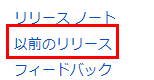

SQL Serverのセットアップ¶
SQL Server および SQL Server Management Studio をインストールします。
SQL Server 2016 のインストール¶
SQL Server 2016 SP1 Developer Edition をインストールします。
注釈
Service Pack が適用されていないSQL Server 2016のバージョンをインストールした場合は、Service Packをインストールしてください。ビルドバージョンが 13.0.4001.0 の場合は、SP1が適用されています。詳細なバージョン情報は こちら を参照。
インストーラーを起動します。 SQL Server インストールセンター が起動したら、 左側になる インストール をクリックします。
表示された画面で、 SQL Server の新規スタンドアロン インストールを実行するか、既存のインストールに機能を追加 を選択します。
プロダクトキー画面で必要に応じて、 プロダクトキーを入力します。 次へ をクリックします。
注釈
Developer Edition の場合は、入力する必要はありません。
ライセンス条項画面が表示されたら、 ライセンスに同意します。 を選択して、 次へ をクリック。
Microsoft Update 画面が表示されたら、 Microsoft Update を使用して更新プログラムを確認する。 を必要に応じてチェックして、 次へ をクリック。
インストール ルール画面が表示されます。エラー(失敗)がないことを確認して、 次へ をクリックします。もし、チェック項目でエラー(失敗)がある場合は、内容を確認して、問題を解決してください。
注釈
Windows ファイアウォール ルールは、スタンドアロン環境にインストールする場合は、無視できます。
機能の選択 画面が表示されたら、 データベースエンジンサービス を選択して、 次へ をクリックします。

インスタンスの構成 画面でデフォルトのまま、 次へ をクリックします。
サーバーの構成 が表示されたら、デフォルトのまま 次へ をクリックします。
データベースエンジンの構成 画面で、 サーバーの構成で次のように変更して**次へ** をクリックします。
- 認証モードで混合モードを選択
- パスワードとパスワードの確認入力に saユーザーのパスワードを入力
- SQL Server 管理者の指定で、 現在のユーザーの追加 ボタンをクリック
インストールの準備完了 画面が表示されたら 次へ をクリックします。

完了画面が表示されたら、 閉じる ボタンをクリックします。インストールセンターを閉じて、再起動します。
SQL Server Management Studio のインストール¶
続いて、SQL Server Management Studio をインストールします。今回は本ドキュメント作成時の最新のバージョン(17.3)をインストールすることにします。
こちら にアクセスして、ページ内のダウンロードリンクをクリックします。ダウンロードされる最新バージョンは、図のバージョンと異なる場合があります。

同ページ内の 以前リリース をクリックすると、過去バージョンをダウンロードできるページに移動できるので、そちらからだSQL Server 2016に対応した Management Studio のインストーラーをダウンロードできます。
ダウンロードした SSMS-Setup-JPN.exe を 右クリック > プロパティ を選択して、プロパティ画面にアクセスします。ブロックの解除 を選択して、 適用 をクリックします。
SSMS-Setup-JPN.exe をダブルクリックしてウィザードを起動します。 インストール をクリックします。
インストールが始まるので、しばらく待ちます。インストールが完了したら、 閉じる をクリックします。
SQL Server の構成¶
包含データベースを有効化します。Microsoft SQL Server Management Studio を起動します。
Win キーをタイプして、スタートメニューから、起動できます。
サーバーへの接続ダイアログで、 接続 ボタンをクリックします。
注釈
SQL Serverのインストール時にセットアップユーザーを管理者に追加している場合は、そのままログインできるはずです。
ツールバーから 新しいクエリ を選択します。
次のコードを入力して、 F5 キーをタイプするか、 ツールバーの実行ボタンをクリックします。
sp_configure 'contained database authentication', 1;
GO
RECONFIGURE;
GO
以上で包含データベースの有効化が完了です。